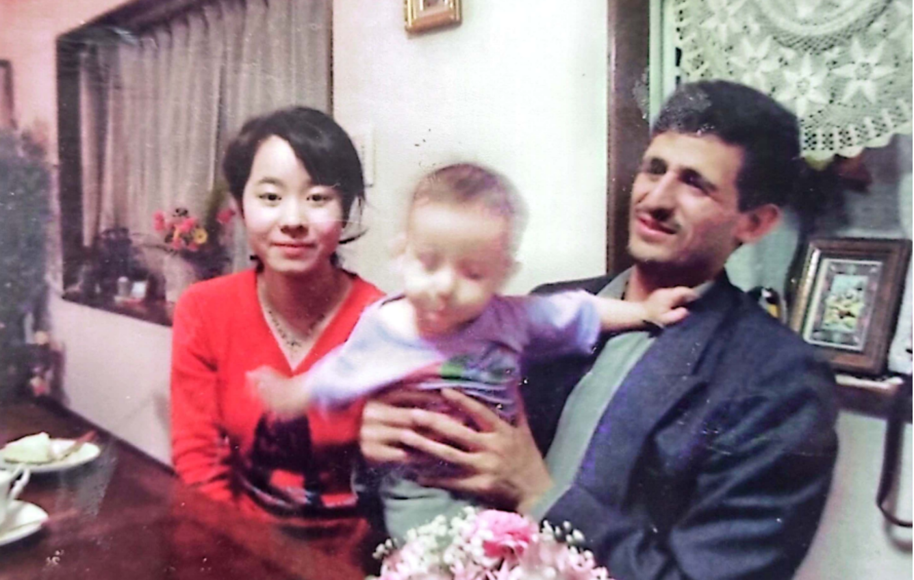
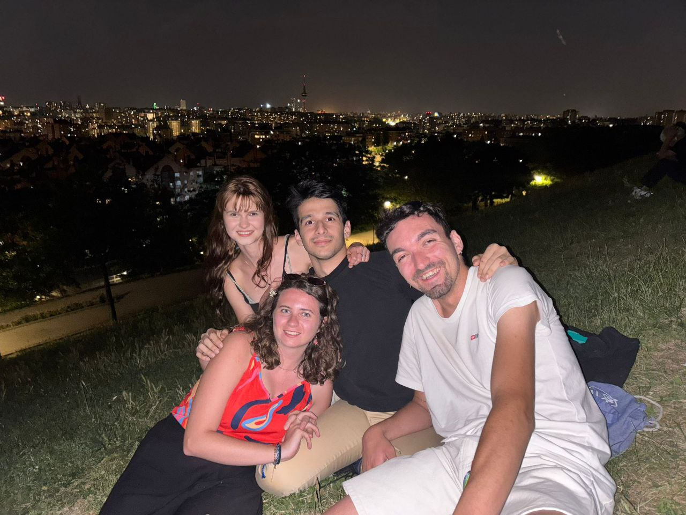

Places I've Called Home
I'm glad you asked. I've been lucky enough to live in a few different countries.
- Iran – So, I grew up in Mashhad, this city in the eastern part of Iran, and hung out there for like 14 years. I also spent a year and a half in Tehran, the capital, and another six years in Shahroud, which is this really charming small town.
- Japan – I was in Sendai, Japan for about 9 months when I was little, tagging along with my family. I have some adorable pics of me dressed up in Japanese outfits!

- Australia – Australia might just top my list of faves for its awesome vibes, cool people, and culture! I spent 6 months there in year 10, went to Kingswood Highschool in Penrith, a suburb of Sydney. Totally picked up the Australian accent while I was there, though it's pretty much gone now. Hit up Brisbane, Melbourne, Canberra, and did loads of sightseeing in Sydney too.


- Switzerland – Spent four awesome months in Lausanne from July to October in 2022. Ended up making friends from over 20 different countries! Did a bunch of hiking and checked out loads of gorgeous Swiss cities like Geneva, Zermatt, Kinderstagen, Zurich, Neuchâtel, etc. Also went around Europe a bit e.g. Austria, Italy and Germany. Totally would choose Switzerland for my honeymoon, no doubt about it.

- Germany – I lived in Bochum for 6 months from July to December 2023. It was a pretty chill time, mostly sticking to indoor stuff like hitting the gym and swimming. Totally obsessed with Unifit back then – that place was my paradise. Also took some trips to Paris, Munich, and Switzerland (again), plus hit up nearby cities like Dortmund, Düsseldorf, and Cologne while I was there.


- Spain – Since February 2025, I’ve been living in Madrid, Spain—and as of now (August 2025), I honestly think Spain is the best country in the world. My student life here has been nothing short of amazing. I met tons of incredible people, including the three legends in the photo below—Oliwia, Panulouis, and Alessandera—whom I randomly bumped into at a hilariously lame Carnival. I also had two French roommates (aka ma vies) who made my time at the residence unforgettable. Madrid helped me level up my salsa moves and, let’s be real, my “coolness” game too. The only downside? My Spanish is still embarrassingly basic.
